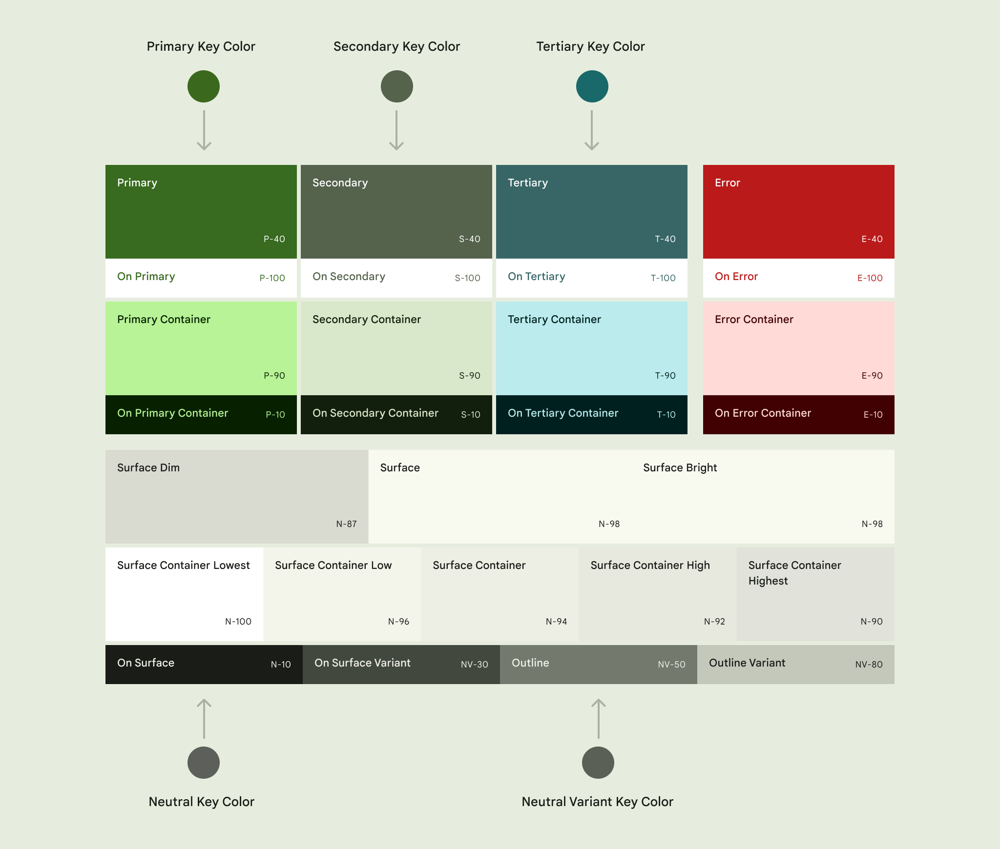

质感设计-样式-色彩
Table of Contents
1. 色彩
色彩（Color）可以表达意义、信息层级和状态。质感设计以5种关键色彩为基础，衍生出20余种色彩职能。
1.1. 关键色彩
质感设计以5种关键色彩（key color）为基础：
- 显著色彩（Accent color）
- 主关键色彩（Primary key color）用于浮动按钮、主要按钮、主要状态等需要用户特别关注的组件。
- 次关键色彩（Secondary key color）用于显著程度稍弱一些的组件。
- 第三关键色彩（Tertiary key color）用于平衡主关键色彩和次关键色彩。
- 中性色彩（Neutral color）
- 中性色彩用于背景（background）的表层色彩（surface color）。
- 中性色彩变体（Neutral color variant）用于中等强调级别的文本、图标和组件边框（Outline）。
除此以外，质感设计提供了警示色彩（error color）。它是一种附加色彩（additional color）。
1.2. 色彩空间和记号
质感设计采用HCT色彩空间。HCT表示色相（Hue）、饱和度（Chroma）和色调（Tone）。质感设计通过调整关键色彩的色调生成不同职能的色彩。色调描述色彩的亮度，0是最暗的黑色，100是最亮的白色。质感设计采用名字加色调值来表示衍生色彩。比如tertiary40表示将第三关键色彩的色调设定为40而产生的色彩。
1.3. 色彩职能
每种显著色彩可以衍生出4种色彩职能。以主关键色彩为例：
| 色彩职能 | 说明 | 色彩值 |
|---|---|---|
| 主色彩（Primary） | 基础色彩 | primary40 |
| 主上层色彩（On-Primary） | 用于主色彩上层的文本和图标等 | primary100 |
| 主容器色彩（Primary container） | 用于强调程度弱于主色彩的元素 | primary90 |
| 主容器上层色彩（On-Primary container） | 用于主容器色彩上层的文本、图标等 | primary10 |
表层色彩（Surface color）用于将一个区域与屏幕背景或其他区域隔离。表层色彩有5种职能。
| 色彩职能 | 说明 | 色彩值 |
|---|---|---|
| 暗表层色彩（Surface dim） | neutral87 | |
| 表层色彩（Surface） | neutral98 | |
| 亮表层色彩（Surface bright） | neutral98 | |
| 最低表层容器色彩（Surface container lowest） | neutral100 | |
| 低表层容器色彩（Surface container low） | neutral96 | |
| 表层容器色彩（Surface container） | neutral94 | |
| 高表层容器色彩（Surface container high） | neutral92 | |
| 最高表层容器色彩（Surface container highest） | neutral90 | |
| 表层上层色彩（On surface） | neutral10 | |
| 表层上层色彩变体（On surface variant） | neutralVariant30 |
边框色彩（Outline color）用于绘制元素边框。
| 色彩职能 | 色彩值 |
|---|---|
| 边框色彩（Outline） | neutralVariant50 |
| 边框色彩变体（Outline variant） | neutralVariant80 |
| 色彩职能 | 色彩值 |
|---|---|
| 表层翻转色彩（Inverse surface） | neutral20 |
| 表层上层翻转色彩（Inverse on surface） | neutral95 |
| 主翻转色彩（Inverse primary） | primary80 |
| 主固定色彩（Primary fixed） | primary90 |
| 暗主固定色彩（Primary fixed dim） | primary80 |
| 第二固定色彩（Secondary fixed） | secondary90 |
| 暗第二固定色彩（Secondary fixed dim） | secondary80 |
| 第三固定色彩（Tertiary fixed） | tertiary90 |
| 暗第三固定色彩（Tertiary fixed dim） | tertiary80 |
| 颜色职能 | 系统变量 | 引用变量 | 暗黑模式引用变量 | 默认值 | 暗黑模式默认值 |
|---|---|---|---|---|---|
| 主色彩 | md.sys.color.primary | md.ref.palette.primary40 | md.ref.palette.primary80 | 6750A4 | D0BCFF |
| 主容器色彩 | md.sys.color.primary-container | md.ref.palette.primary90 | md.ref.palette.primary30 | EADDFF | 4F378B |
| 主上层色彩 | md.sys.color.on-primary | md.ref.palette.primary100 | md.ref.palette.primary20 | FFFFFF | 371E73 |
| 主容器上层色彩 | md.sys.color.on-primary-container | md.ref.palette.primary10 | md.ref.palette.primary90 | 21005E | EADDFF |
| 主翻转色彩 | md.sys.color.inverse-primary | md.ref.palette.primary80 | md.ref.palette.primary40 | D0BCFF | 6750A4 |
| 第二色彩 | md.sys.color.secondary | md.ref.palette.secondary40 | md.ref.palette.secondary80 | 625B71 | CCC2DC |
| 第二容器色彩 | md.sys.color.secondary-container | md.ref.palette.secondary90 | md.ref.palette.secondary30 | E8DEF8 | 4A4458 |
| 第二上层色彩 | md.sys.color.on-secondary | md.ref.palette.secondary100 | md.ref.palette.secondary20 | FFFFFF | 332D41 |
| 第二容器上层色彩 | md.sys.color.on-secondary-container | md.ref.palette.secondary10 | md.ref.palette.secondary90 | 1E192B | E8DEF8 |
| 第三色彩 | md.sys.color.tertiary | md.ref.palette.tertiary40 | md.ref.palette.tertiary80 | 7D5260 | EFB8C8 |
| 第三容器色彩 | md.sys.color.tertiary-container | md.ref.palette.tertiary90 | md.ref.palette.tertiary30 | FFD8E4 | 633B48 |
| 第三上层色彩 | md.sys.color.on-tertiary | md.ref.palette.tertiary100 | md.ref.palette.tertiary20 | FFFFFF | 492532 |
| 第三容器上层色彩 | md.sys.color.on-tertiary-container | md.ref.palette.tertiary10 | md.ref.palette.tertiary90 | 370B1E | FFD8E4 |
| 表层色彩 | md.sys.color.surface | md.ref.palette.neutral98 | md.ref.palette.neutral6 | FEF7FF | 141218 |
| 暗表层色彩 | md.sys.color.surface-dim | md.ref.palette.neutral87 | md.ref.palette.neutral6 | DED8E1 | 141218 |
| 亮表层色彩 | md.sys.color.surface-bright | md.ref.palette.neutral98 | md.ref.palette.neutral24 | FEF7FF | 3B383E |
| 最低表层容器色彩 | md.sys.color.surface-container-lowest | md.ref.palette.neutral100 | md.ref.palette.neutral4 | FFFFFF | 0F0D13 |
| 低表层容器色彩 | md.sys.color.surface-container-low | md.ref.palette.neutral96 | md.ref.palette.neutral10 | F7F2FA | 1D1B20 |
| 表层容器色彩 | md.sys.color.surface-container | md.ref.palette.neutral94 | md.ref.palette.neutral12 | F3EDF7 | 211F26 |
| 高表层容器色彩 | md.sys.color.surface-container-high | md.ref.palette.neutral92 | md.ref.palette.neutral17 | ECE6F0 | 2B2930 |
| 最高表层容器色彩 | md.sys.color.surface-container-highest | md.ref.palette.neutral90 | md.ref.palette.neutral22 | E6E0E9 | 36343B |
| 表层色彩变体 | md.sys.color.surface-variant | md.ref.palette.neutral-variant90 | md.ref.palette.neutral-variant30 | E7E0EC | 49454F |
| 表层上层色彩 | md.sys.color.on-surface | md.ref.palette.neutral10 | md.ref.palette.neutral90 | 1C1B1F | E6E1E5 |
| 表层上层色彩变体 | md.sys.color.on-surface-variant | md.ref.palette.neutral-variant30 | md.ref.palette.neutral-variant80 | 49454E | CAC4D0 |
| 表层翻转色彩 | md.sys.color.inverse-surface | md.ref.palette.neutral20 | md.ref.palette.neutral90 | 313033 | E6E1E5 |
| 表层上层翻转色彩 | md.sys.color.inverse-on-surface | md.ref.palette.neutral95 | md.ref.palette.neutral20 | F4EFF4 | 313033 |
| 背景色彩 | md.sys.color.background | md.ref.palette.neutral98 | md.ref.palette.neutral6 | FEF7FF | 141218 |
| 背景上层色彩 | md.sys.color.on-background | md.ref.palette.neutral10 | md.ref.palette.neutral90 | 1C1B1F | E6E1E5 |
| 警示色彩 | md.sys.color.error | md.ref.palette.error40 | md.ref.palette.error80 | B3261E | F2B8B5 |
| 警示容器色彩 | md.sys.color.error-container | md.ref.palette.error90 | md.ref.palette.error30 | F9DEDC | 8C1D18 |
| 警示上层色彩 | md.sys.color.on-error | md.ref.palette.error100 | md.ref.palette.error20 | FFFFFF | 601410 |
| 警示容器上层色彩 | md.sys.color.on-error-container | md.ref.palette.error10 | md.ref.palette.error90 | 410E0B | F9DEDC |
| 边框色彩 | md.sys.color.outline | md.ref.palette.neutral-variant50 | md.ref.palette.neutral-variant60 | 79747E | 938F99 |
| 边框色彩变体 | md.sys.color.outline-variant | md.ref.palette.neutral-variant80 | md.ref.palette.neutral-variant30 | C4C7C5 | 444746 |
| 阴影色彩 | md.sys.color.shadow | md.ref.palette.neutral0 | md.ref.palette.neutral0 | 000000 | 000000 |
| 表层浅色 | md.sys.color.surface-tint-color | md.sys.color.primary | md.sys.color.primary | 6750A4 | D0BCFF |
| 蒙层色彩 | md.sys.color.scrim | md.ref.palette.neutral0 | md.ref.palette.neutral0 | 000000 | 000000 |

Figure 1: 色彩职能